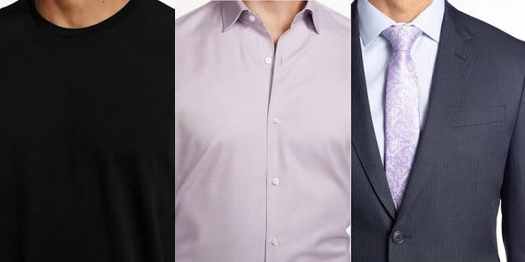
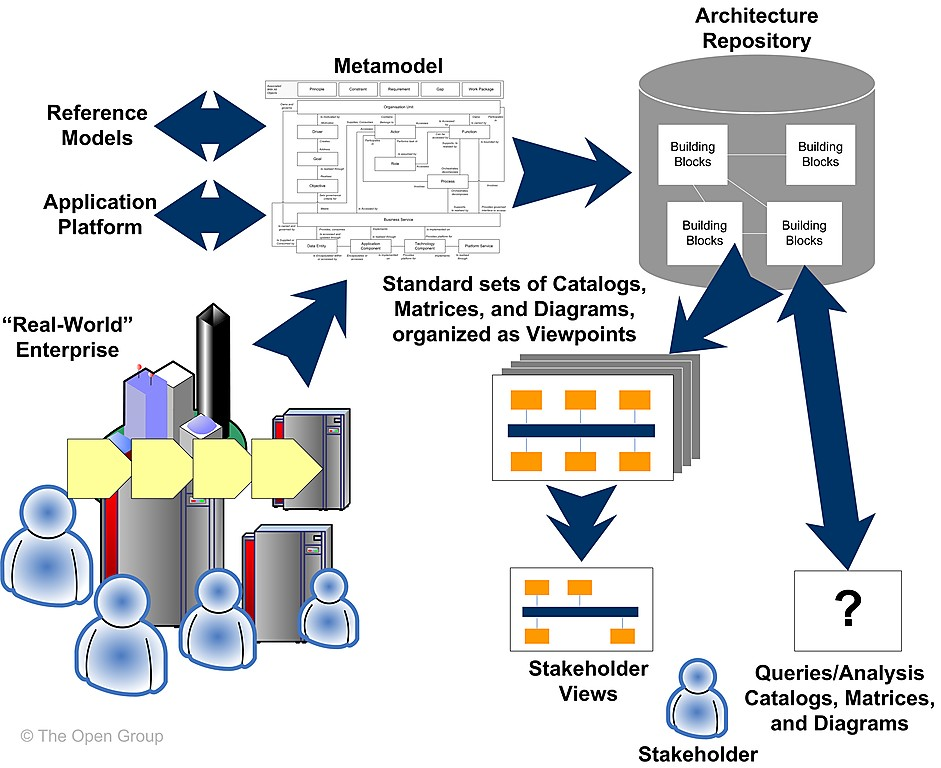
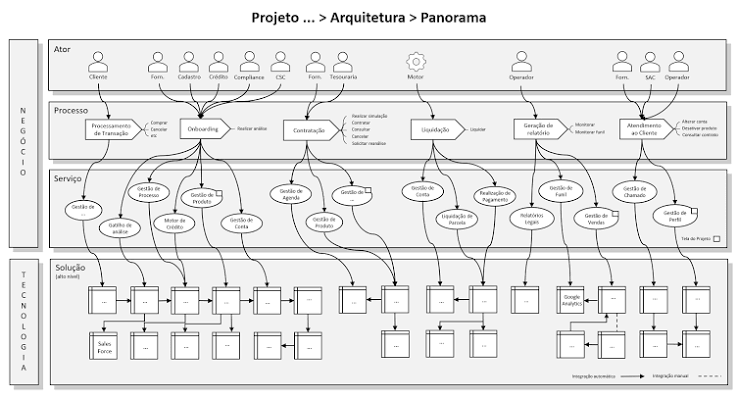
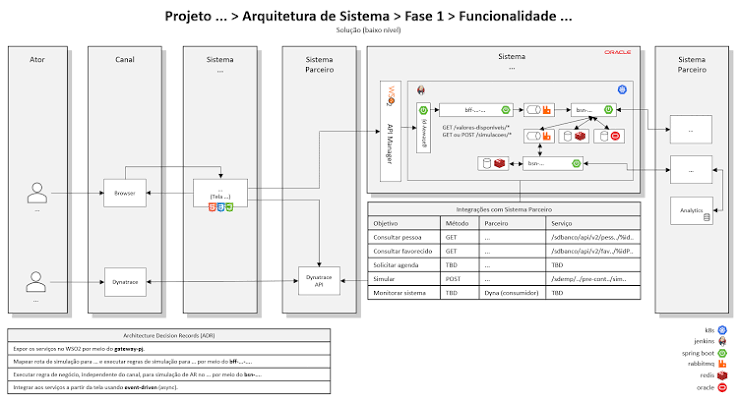
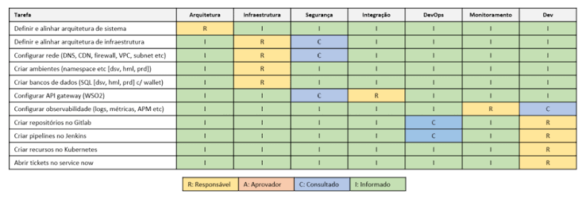
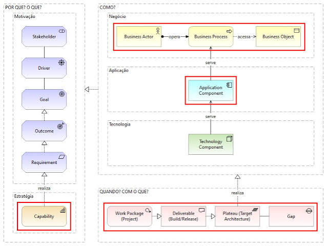
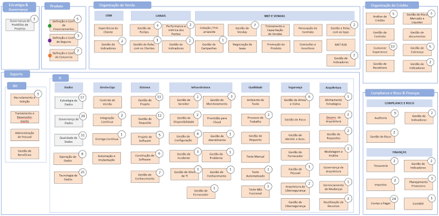
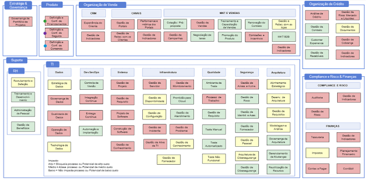
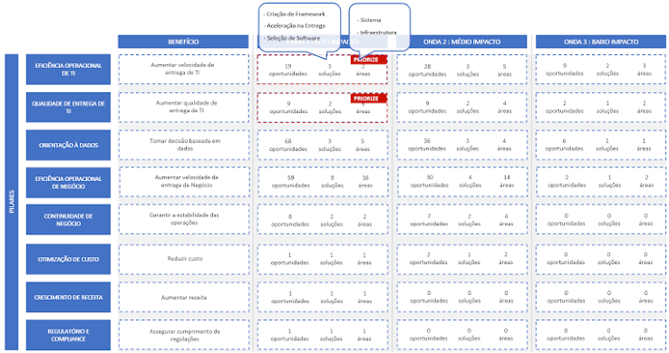

Em 2023, fui chamado para participar de projetos exercendo alguns papéis, tais como: Arquiteto de Soluções, Arquiteto Corporativo e Líder Técnico.
Projetos que geraram muito aprendizado e três lições que compartilho abaixo.
1. Discernimento com frameworks#
A financeira de uma grande montadora de veículos precisou aumentar a velocidade de lançamento de novas ofertas de seguros em seu sistema de financiamento de veículos.
Para isso, contratou um serviço de TI para identificar o as is de suas aplicações e definir o to be para atender essa necessidade. Eu fui convidado.
O time de arquitetura da empresa não possuía um repositório de arquitetura e, por consequência, não possuía uma estrutura de dados (metamodelo).
Sem isso, é impossível executar o trabalho utilizando os três passos sugeridos pelo TOGAF na imagem abaixo. Clique na imagem para expandir.


Como o objetivo não era definir esses itens faltantes para um setor de arquitetura, mas para um serviço de 1-2 meses, utilizei somente os tipos destacados abaixo do Archimate (imagem com estrutura simplificada), os quais foram suficientes.
O resultado desse trabalho, realizado junto com uma analista de negócio da empresa, foi a identificação as is na estrutura destacada acima, o to be da arquitetura de aplicações e o business case do projeto composto por escopo, esforço, time, premissas e fora de escopo.
Uma lição aprendida tirada desse projeto foi: Se houver discernimento para usar somente o que é necessário de um framework, ele será útil em vários casos de uso.
2. Fronteira entre funcional e técnica#
A financeira de uma das maiores varejistas do Brasil precisou lançar um produto para seus fornecedores.
Para isso, montou um time multidisciplinar e eu fui convidado à ser líder técnico e, parte do tempo, arquiteto de soluções.
Inicialmente, o time de produtos não havia especificado o produto conforme um time de tecnologia necessita para iniciar o trabalho.
Dessa forma, contribuí auxiliando no uso de BPMN e conceituando os limites entre especificação funcional e técnica.
O avanço desse trabalho resultou na definição dos atores, processos, dados e serviços de negócio necessários para operar o novo produto. Em outras palavras, considerando o Archimate apresentado no tópico anterior, a camada de negócio estava sendo definida.
Com isso, consegui começar a definir a camada de aplicação identificando as aplicações existentes que iriam atender os serviços de negócio, novas aplicações que seriam desenhadas, aquisição de fornecedores e fronteiras com outros times.
O panorama do projeto ficou conforme abaixo, omitindo dados confidenciais do projeto.


Essa imagem foi útil para alinhar serviços (requisitos) de negócio com os sistemas, para criação de histórias de usuário, para reunião com fornecedor, para reunião com outros times e para iniciar a solução em baixo nível.
Como exemplo, abaixo, uma solução em baixo nível de uma funcionalidade para atender um conjunto de histórias de usuário, omitindo dados confidenciais do projeto.


A empresa possui ADRs que precisaram ser atendidas, por exemplo uso obrigatório de componentes para resolverem necessidades que ainda não existem, tais como: Backend for frontend, exposição de lógica de negócio e retaguarda.
O uso obrigatório, sem haver ainda a necessidade, criou uma complexidade conceitual, ao meu ver, desnecessária. Mas não houve como contornar.
Houve a necessidade de alinhar os requisitos técnicos com as áreas de TI da empresa. Criei a tabela abaixo e direcionei tais requisitos às áreas.


A lição aprendida nesse projeto foi: Alinhar o quanto antes a fronteira entre especificação funcional e técnica.
Em geral, funcional especifica o que o usuário do sistema enxerga e técnica especifica o que o usuário do sistema não enxerga.
3. Objetividade na comunicação#
A financeira de outra grande montadora de veículos precisou criar um plano diretor de TI.
Para isso, contratou um serviço de Arquitetura Corporativa para realizar tal tarefa. Eu fui convidado.
Inicialmente, precisamos definir a estrutura de dados e repositório. Definimos Archimate e Archi.
Após isso, definimos que coletaríamos dados dos tipos destacados na imagem simplificada abaixo.


Infelizmente, não foi possível coletar dados da camada motivação e isso não tornou o resultado do trabalho tão bom quanto poderia, embora ficou ótimo.
Deixo abaixo um exemplo interessante a partir de uma modelagem de uma empresa retirado de ITArch.info.
Após 52 entrevistas com 25 áreas de negócio e tecnologia, geramos duas versões do mapa de capacidades da empresa.
A primeira versão representou uma análise quantitativa identificando o número de oportunidades de melhoria em cada capacidade, conforme imagem abaixo.


A segunda versão representou uma análise qualitativa identificando a gravidade da ausência da realização da oportunidade de melhoria, em cada capacidade, conforme imagem abaixo.


Os dados da camada de negócio e aplicação, dado o tempo curto do projeto, começou a ser manuseado no Excel, em vez do Archi. Nenhuma visão foi gerada para esses dados.
Como observado nos mapas de capacidades acima, as áreas de TI Dados, DevSecOps, Sistema, Infraestrutura, Qualidade, Segurança e Arquitetura foram entrevistadas.
Foi gerado um relatório para cada área de TI com perguntas e um painel com o resultado. Abaixo, exemplo de Infraestrutura, omitindo dados confidenciais do projeto.
Por fim, o roadmap em alto nível abaixo. No repositório de arquitetura é possível observar os projetos e dependências sugeridas. Isso compõe a camada migração (em vermelho) do Archimate exibido acima no início desse tópico.


Após alguns meses do plano entregue, a empresa executou alguns projetos sugeridos e obteve melhorias operacionais e gerenciais.
A lição aprendida nesse projeto foi: Se o patrocinador não está alinhado ao projeto, procure ser objetivo e utilizar palavras que lhe agradam.